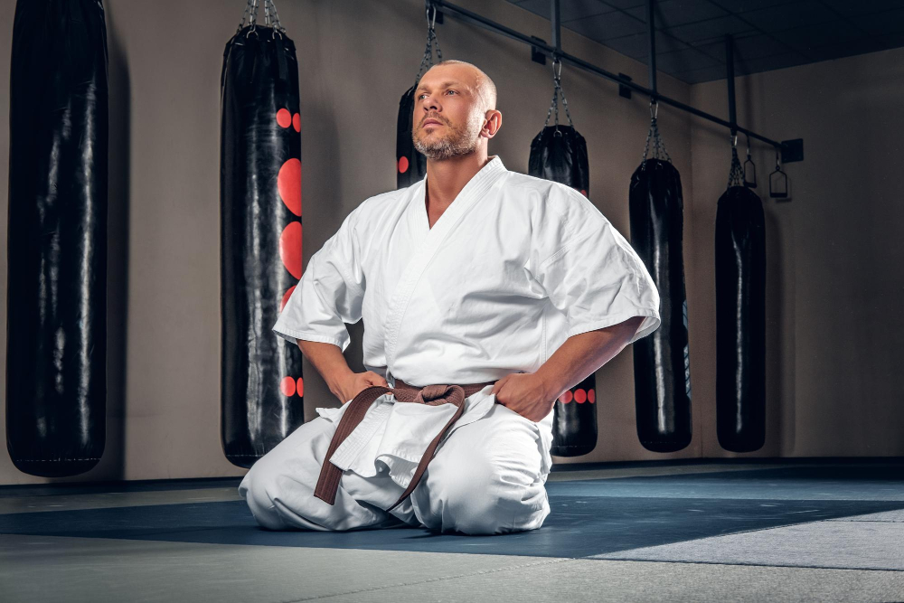

A Origem do Dia do Karatê

O encontro histórico de 1936 em Okinawa.
A data de 25 de outubro foi escolhida como o Dia Mundial do Karatê para celebrar a histórica reunião de mestres ocorrida em 1936, na província de Okinawa, no Japão. Nesse encontro, os grandes líderes das principais escolas da época oficializaram o termo "Karatê" (utilizando os ideogramas que significam "Mãos Vazias"). Esse marco organizou a transição da técnica de uma arte de combate secreta e regional para um sistema educacional e esportivo de alcance global.
"O objetivo fundamental da arte do Karatê não consiste na vitória ou na derrota, mas no aperfeiçoamento do caráter de seus praticantes."
— Mestre Gichin Funakoshi, pai do Karatê moderno.